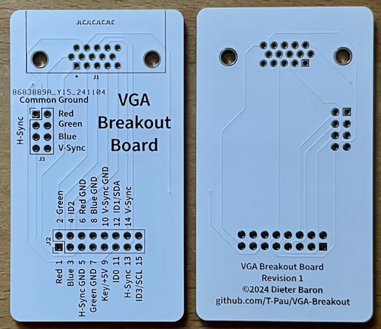
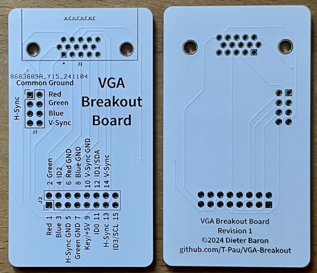
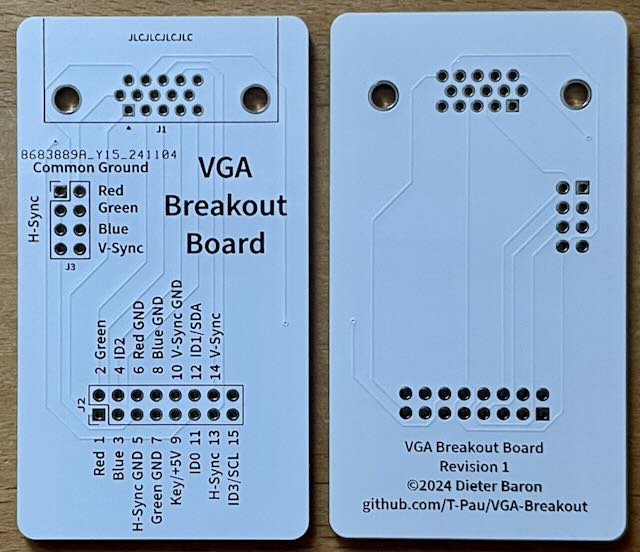

Diese Platine führt alle Signale des VGA Steckers an eine Stiftleiste. Zusätzlich können die verschiedenen GND Leitungen per Jumper verbunden werden.
Projekt-Homepage • Interakiver Bestückungsplan • Schaltplan

| Komponente | Anzahl | Preis | Anbieter |
| Platine | 1 | €1.00 | |
| 90° D-Sub-15-HD Buchse | 1 | €0.40 | Reichelt |
| 2x4 Stiftleiste | 1 | €0.10 | Reichelt |
| 2x8 Stiftleiste | 1 | €0.20 | Reichelt |
| Jumper | 4 | €0.03 | Reichelt |
| nur Platine | €1.00 | ||
| Bausatz | €1.73 |